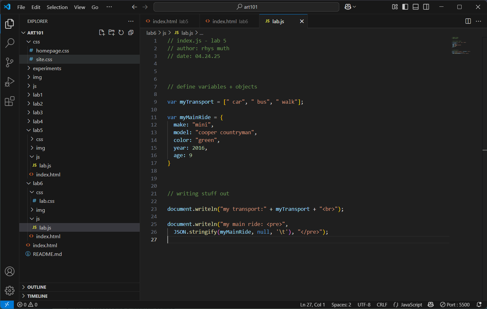

lab 6 - arrays & objects
challenge
this lab built upon the previous one and introduced us to compiling variables/data into arrays and objects.
problems
i didn't really struggle with this lab! the only brief issues i had were figuring out where to place the spaces in the transport array so that the text would display correctly in the end, as well as a couple commas i forgot to put in the main ride object, but both of those were quickly solved after a short closer inspection of my work.
reflection
i don't have much to say about this one! it was pretty simply and smooth for me and was finished pretty quickly! i do worry a little about how i'd fare without clear tutorials and instruction though.
results
script output:
image: js code in console
image: js code in vs code